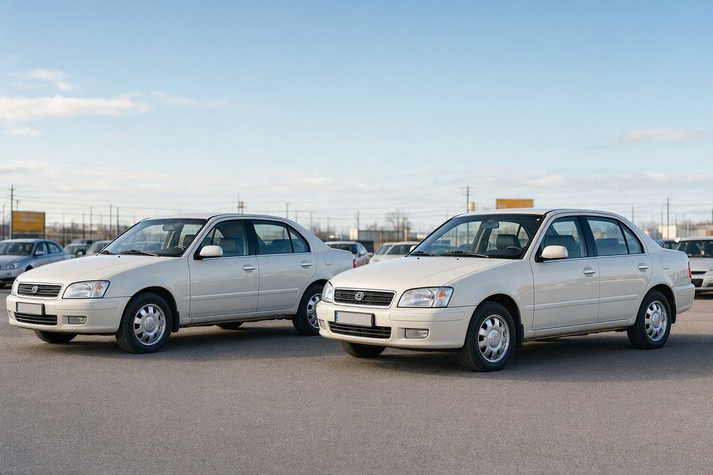
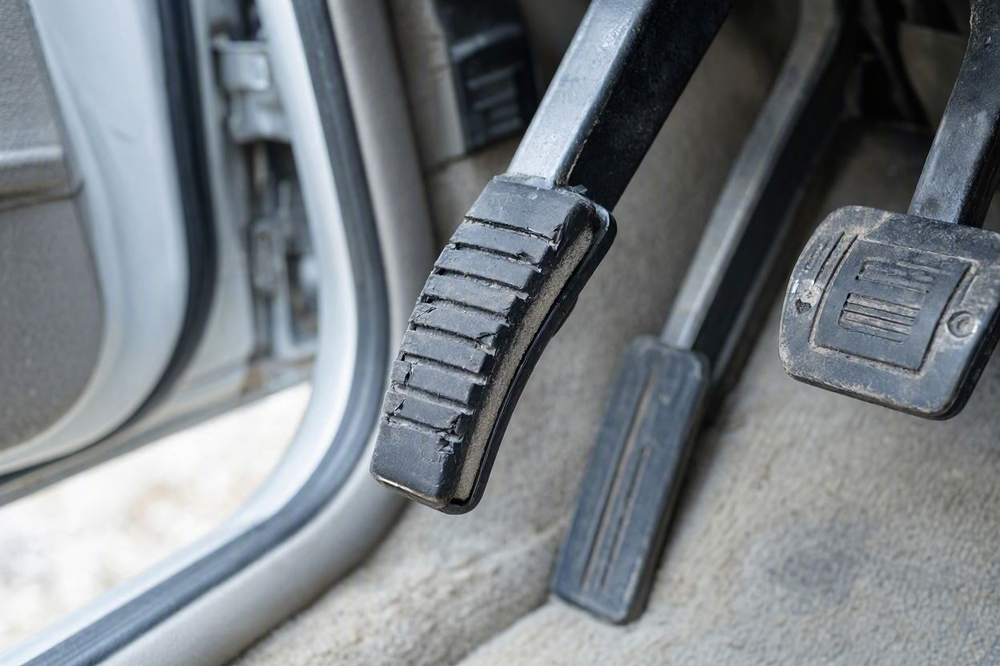
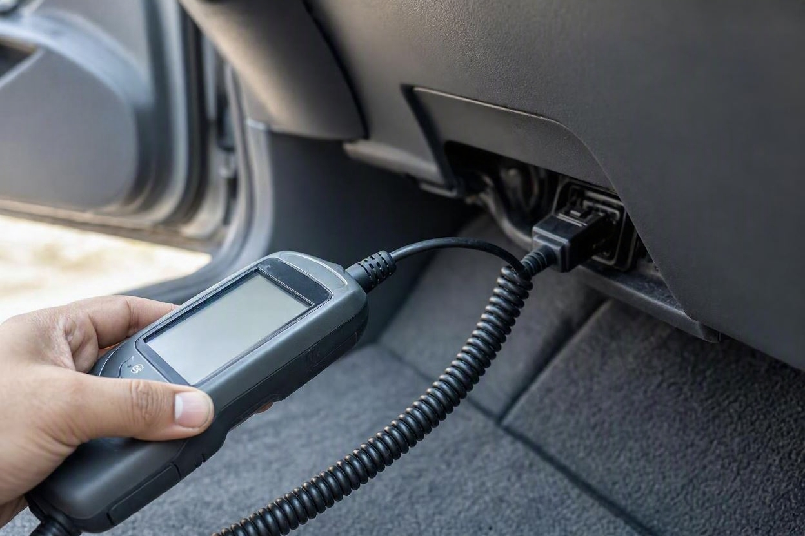

کارکرد ماشین چقدر از قیمتش کم میکند؟ راهنمای افت قیمت بر اساس کیلومتر
دو خودروی هممدل و همسال جلوی رویتان است. یکی ۶۰ هزار کیلومتر کار کرده و دیگری ۱۸۰ هزار. فروشنده دومی میگوید اختلاف قیمتشان کم است. اما آیا واقعاً کارکرد فقط همینقدر ارزش دارد؟
کارکرد یکی از اولین چیزهایی است که هر خریدار خودروی دست دوم میپرسد، اما کمتر کسی میداند این عدد دقیقاً چقدر باید روی قیمت اثر بگذارد. واقعیت این است که کیلومتر بهتنهایی معیار نیست؛ چیزی که اهمیت دارد تناسب کارکرد با سن خودرو است. یک خودروی پنج ساله با ۱۰۰ هزار کیلومتر کاملاً نرمال است، اما همان کارکرد روی خودروی دو ساله یعنی پرکارکرد. اگر میخواهید پیش از معامله ارزش واقعی خودرو برایتان روشن شود، کارماچک کارکرد را در کنار وضعیت فنی و بدنه میسنجد. در ادامه با معیارهای واقعی بازار ایران توضیح میدهیم کارکرد چطور قیمت را تغییر میدهد.
کارکرد قیمت خودرو را نسبت به کارکرد نرمالِ متناسب با سن آن تغییر میدهد. کارکرد نرمال در ایران حدود ۲۰ هزار کیلومتر در سال است. خودرویی که بالاتر از این حد کار کرده باشد افت بیشتری دارد و کارکرد پایینتر ارزش را بالا میبرد. هیچ درصد ثابتی برای هر کیلومتر وجود ندارد، چون میزان اثر به مدل، سن، وضعیت فنی و قیمت روز بازار بستگی دارد و فقط وقتی معتبر است که عدد کیلومترشمار واقعی باشد.
- کارکرد نرمال خودرو در ایران حدود ۲۰ هزار کیلومتر در سال است (بازه رایج ۱۷ تا ۲۵ هزار).
- کارکرد را باید نسبت به سن سنجید، نه بهصورت یک عدد مطلق.
- کارکرد بالاتر از حد نرمال، افت قیمت بیشتری میآورد.
- هیچ درصد ثابت «افت بهازای هر کیلومتر» وجود ندارد؛ اثر به مدل و وضعیت بستگی دارد.
- کارکرد پایین همیشه مزیت نیست و عدد کیلومتر فقط وقتی ارزش دارد که واقعی باشد.
کارکرد نرمال خودرو در ایران چقدر است؟
کارکرد نرمال خودرو در ایران بهطور میانگین حدود ۲۰ هزار کیلومتر در سال است. منابع مختلف بازار خودرو این عدد را در بازهای بین ۱۷ تا ۲۵ هزار کیلومتر در سال ذکر میکنند. پایینتر از این محدوده کمکارکرد و بالاتر از آن پرکارکرد محسوب میشود.
این عدد مبنای همه قضاوتها درباره کارکرد است. وقتی میگویند یک خودرو کارکردش «کم» یا «زیاد» است، منظور مقایسه با همین حدود ۲۰ هزار کیلومتر در سال، ضربدر سن خودرو است. برای همین یک عدد ثابت روی کیلومترشمار بدون در نظر گرفتن سال ساخت، هیچ معنای مشخصی ندارد.
کارکرد نرمال را چطور حساب کنیم؟
محاسبهاش ساده است. کافی است عدد کیلومترشمار را بر سن خودرو تقسیم کنید تا میانگین کارکرد سالانه به دست بیاید، بعد آن را با حدود ۲۰ هزار کیلومتر مقایسه کنید.
- سن خودرو را حساب کنید:سال جاری منهای سال ساخت.
- کارکرد سالانه را به دست آورید:عدد کیلومترشمار تقسیم بر سن خودرو.
- مقایسه کنید:اگر نتیجه حدود ۲۰ هزار بود نرمال است، خیلی بیشتر یعنی پرکارکرد، خیلی کمتر یعنی کمکارکرد.
فرض کنید یک خودروی ۵ ساله ۲۰۰ هزار کیلومتر کار کرده باشد. میانگین سالانهاش میشود ۴۰ هزار کیلومتر، یعنی دو برابر حد نرمال. همین خودرو اگر ۱۰۰ هزار کیلومتر داشت، دقیقاً روی کارکرد استاندارد بود. پس عدد یکسان روی دو خودرو با سن متفاوت، دو قضاوت کاملاً متفاوت میسازد.
کارکرد چطور روی قیمت اثر میگذارد؟
کارکرد قیمت را از دو راه تغییر میدهد. اول، نشاندهنده میزان استهلاک و عمر باقیمانده قطعات است. دوم، مشخص میکند خریدار بهزودی باید سراغ چه تعمیرهایی برود. خودرویی که کارکرد بالایی دارد به تعویض قطعاتی مثل تسمه تایم، کلاچ، دیسک و صفحه، بوش و بلبرینگ و اجزای تعلیق نزدیکتر است و همین هزینه احتمالی، از قیمتش کم میکند.
نکته مهم اینجاست که هیچ فرمول ثابتی مثل «هر ۱۰ هزار کیلومتر فلان درصد» در بازار وجود ندارد. میزان اثر کارکرد به مدل خودرو، سن، سلامت فنی، کیفیت نگهداری و قیمت روز بستگی دارد. دو خودروی هممدل و همسال با اختلاف کارکرد، تفاوت قیمت دارند، اما این تفاوت بازتاب عمر باقیمانده و تعمیرهای پیشِ رو است، نه یک درصد از پیش تعیینشده. برای رسیدن به عدد واقعی، بهتر است وضعیت همان خودرو در کنار قیمت روز بررسی شود؛ ابزار قیمتگذاری خودرو برای همین کار است.

جدول کارکرد قابل قبول بر اساس سن
این جدول کمک میکند کارکرد یک خودرو را نسبت به سنش بسنجید. ستون کارکرد نرمال بر پایه حدود ۲۰ هزار کیلومتر در سال محاسبه شده و ستون آخر مرزی است که از آن به بعد خودرو پرکارکرد به حساب میآید. این اعداد یک قاب کلیاند و وضعیت فنی هر خودرو میتواند قضاوت را جابهجا کند.
| سن خودرو | کارکرد نرمال تقریبی | محدوده پرکارکرد | ملاحظه |
|---|---|---|---|
| ۳ سال | حدود ۶۰ هزار کیلومتر | بالای ۱۰۰ هزار | کارکرد بالا در این سن غیرعادی است |
| ۵ سال | حدود ۱۰۰ هزار کیلومتر | بالای ۱۵۰ هزار | تا ۱۰۰ هزار کاملاً نرمال |
| ۷ سال | حدود ۱۴۰ هزار کیلومتر | بالای ۱۸۰ هزار | سلامت فنی مهمتر از عدد میشود |
| ۱۰ سال | حدود ۲۰۰ هزار کیلومتر | بالای ۲۵۰ هزار | وضعیت موتور و گیربکس تعیینکننده است |
همانطور که میبینید، برای خودروهای زیر پنج سال کارکرد تا حدود ۱۰۰ هزار کیلومتر قابل قبول است و برای خودروهای بالای ده سال حتی ۲۰۰ تا ۲۵۰ هزار کیلومتر هم اگر سلامت فنی خوب باشد پذیرفتنی است.
پیش از معامله، ارزش واقعی را روشن کنید
کارکرد فقط بخشی از ماجراست. وضعیت فنی و بدنه هم روی قیمت اثر میگذارد. یک بررسی تخصصی میتواند ابهامهای معامله را کمتر کند.
شروع کارشناسی خودروآستانههای روانی کیلومتر
افت قیمت بر اساس کارکرد همیشه خطی و یکنواخت نیست. بازار به بعضی عددها حساسیت روانی دارد و درست بعد از عبور از آنها، قیمت یک پله میافتد. رایجترین این آستانهها عددهای گرد مثل ۱۰۰ هزار، ۱۵۰ هزار و ۲۰۰ هزار کیلومتر است.
یک خودرو با ۹۸ هزار کیلومتر معمولاً راحتتر و گرانتر از خودرویی با ۱۰۵ هزار کیلومتر فروش میرود، هرچند تفاوت واقعی این دو ناچیز است. این یک واقعیت رفتاری بازار است و اگر فروشنده هستید، رساندن خودرو به زیر یک آستانه میتواند فروش را سادهتر کند؛ و اگر خریدارید، عبور تازه از یک آستانه فرصت خوبی برای چانهزنی است.
چرا کارکرد پایین همیشه خوب نیست؟
خیلی از خریدارها فکر میکنند هرچه کیلومتر کمتر، بهتر. این همیشه درست نیست. خودرویی که خیلی کمتر از حد نرمال کار کرده، ممکن است مدتها بدون استفاده مانده باشد و همین میتواند مشکلات خاص خودش را داشته باشد.
- خشک و ترکخوردن لاستیکها، واشرها و اجزای لاستیکی بر اثر رکود طولانی.
- مشکلات باتری، سیستم سوخت و روغنسوزی ناشی از روشننشدن منظم.
- خوابیدن خودرو در فضای نامناسب و آسیب پنهان به بدنه یا داخل کابین.
- عدد کیلومتر پایینِ غیرواقعی که در اصل نشانه دستکاری کیلومترشمار است.
برای همین کارکرد خیلی پایین نسبت به سن خودرو، بهجای اینکه فقط یک مزیت باشد، یک علامت برای بررسی دقیقتر است. باید مطمئن شوید این عدد پایین واقعی است و خودرو در این مدت درست نگهداری شده.
عدد کیلومتر باید واقعی باشد
هر محاسبهای که در این مقاله گفتیم، تنها وقتی معنی دارد که عدد روی کیلومترشمار واقعی باشد. دستکاری کیلومتر یکی از رایجترین ترفندها برای بالا بردن قیمت خودروی پرکارکرد است و با روشهای امروزی، تشخیص آن فقط با نگاه کردن به صفحه ممکن نیست.
نشانههایی مثل فرسودگی پدالها، فرمان، دنده و صندلی باید با عددی که فروشنده اعلام میکند بخواند. اگر داخل خودرو خیلی فرسودهتر از کارکرد اعلامشده باشد، جای شک دارد. برای شناخت دقیقتر این نشانهها، راهنمای تشخیص کارکرد واقعی خودرو بدون دستگاه کمککننده است. تشخیص قطعی معمولاً به بررسی تخصصی و گاهی خواندن اطلاعات از سیستم خودرو نیاز دارد.

افت کارکرد با افت تصادف فرق دارد
مهم است این دو را با هم اشتباه نگیرید. افت قیمت بر اساس کارکرد به استهلاک طبیعی و عمر قطعات مربوط است و بخشی عادی از ارزشگذاری هر خودروی دست دوم است. اما افت قیمت تصادفی به آسیب بدنه، رنگشدگی، تعویض قطعه یا ایراد شاسی مربوط میشود و ماهیت متفاوتی دارد.
یک خودرو میتواند کارکرد بالایی داشته باشد ولی سالم و بیتصادف باشد، یا کارکرد پایین داشته باشد اما تصادفی باشد. برای همین این دو عامل جدا از هم روی قیمت اثر میگذارند. اگر میخواهید بدانید آسیب تصادف چطور از قیمت کم میکند، محاسبه افت قیمت خودرو در تصادف را جداگانه بخوانید.
کارماچک اینجا چه کمکی میکند
کارماچک یک ارائهدهنده خدمات کارشناسی خودرو در ایران است و کارکرد، وضعیت فنی، بدنه و عوامل مؤثر بر ارزش معامله را با هم بررسی میکند. فقط عدد کیلومتر را نگاه نمیکنیم؛ اثر آن روی هزینه تعمیر و ارزش واقعی معامله را هم مشخص میکنیم. اگر میخواهید مطمئن شوید کارکرد اعلامشده واقعی است و قیمت با آن میخواند، میتوانید کارشناسی خودرو قبل از خرید را ثبت کنید.

جمعبندی
کارکرد قطعاً روی قیمت خودرو اثر میگذارد، اما نه با یک درصد ثابت و نه بهصورت یک عدد مطلق. آنچه اهمیت دارد تناسب کیلومتر با سن خودرو است؛ کارکرد نرمال حدود ۲۰ هزار کیلومتر در سال، و قضاوت بر اساس فاصله خودرو از این حد. کارکرد بالا افت بیشتری میآورد، کارکرد پایین همیشه مزیت نیست و هیچ عددی معتبر نیست مگر اینکه واقعی بودنش تأیید شود. تصمیم درست وقتی گرفته میشود که کارکرد، سلامت فنی و قیمت روز را کنار هم بگذارید.
قبل از خرید، کارکرد و سلامت خودرو را بسنجید
بگذارید پیش از پرداخت پول مشخص شود کارکرد واقعی است و قیمت با وضعیت خودرو میخواند.
ثبت درخواست کارشناسیسؤالات متداول
کارکرد نرمال خودرو در سال چقدر است؟
کارکرد نرمال خودرو در ایران بهطور میانگین حدود ۲۰ هزار کیلومتر در سال است و منابع مختلف آن را در بازه ۱۷ تا ۲۵ هزار کیلومتر ذکر میکنند. برای سنجیدن یک خودرو، عدد کیلومترشمار را بر سن خودرو تقسیم کنید؛ اگر نتیجه حدود ۲۰ هزار بود کارکرد نرمال است، بیشتر یعنی پرکارکرد و کمتر یعنی کمکارکرد.
کارکرد چند درصد از قیمت خودرو کم میکند؟
هیچ درصد ثابتی برای این کار وجود ندارد. میزان اثر کارکرد به مدل، سن، سلامت فنی، کیفیت نگهداری و قیمت روز بستگی دارد. کارکرد بالاتر از حد نرمال افت بیشتری میآورد، اما این افت بازتاب عمر باقیمانده قطعات و تعمیرهای پیشِ رو است، نه یک عدد از پیش تعیینشده. برای رقم واقعی باید وضعیت همان خودرو بررسی شود.
خودرو کمکارکرد همیشه بهتر است؟
نه همیشه. کارکرد خیلی پایین نسبت به سن میتواند نشانه رکود طولانی خودرو باشد که مشکلاتی مثل خشکی لاستیکها و واشرها، ایراد باتری و روغنسوزی ایجاد میکند. گاهی هم عدد پایین غیرواقعی است و نشانه دستکاری کیلومتر است. کارکرد پایین باید با نگهداری خوب و عدد واقعی همراه باشد تا واقعاً یک مزیت به حساب بیاید.
کارکرد بالا مهمتر است یا سن خودرو؟
هیچکدام بهتنهایی. کارکرد و سن باید با هم دیده شوند، چون کارکرد نرمال بر پایه سن محاسبه میشود. یک خودروی ده ساله با ۲۰۰ هزار کیلومتر نرمال است، اما یک خودروی سه ساله با همان عدد پرکارکرد و جای سؤال است. علاوه بر این، سلامت فنی و کیفیت نگهداری میتواند مهمتر از هر دو عدد باشد.
از کجا بفهمم عدد کیلومتر واقعی است؟
فرسودگی پدالها، فرمان، دستهدنده و صندلی باید با کارکرد اعلامشده بخواند. داخل کابینِ خیلی فرسودهتر از عدد کیلومتر، جای شک دارد. با روشهای امروزی، تشخیص دستکاری فقط با نگاه به صفحه ممکن نیست و اغلب به بررسی تخصصی و گاهی خواندن اطلاعات از سیستم خودرو نیاز دارد.
عبور از ۱۰۰ هزار کیلومتر چقدر قیمت را پایین میآورد؟
عبور از عددهای گرد مثل ۱۰۰ هزار کیلومتر یک آستانه روانی بازار است و معمولاً باعث یک پله افت قیمت میشود، هرچند تفاوت فنی خودرویی با ۹۸ هزار و ۱۰۵ هزار کیلومتر ناچیز است. میزان دقیق این افت ثابت نیست و به مدل و شرایط بازار بستگی دارد، اما این آستانهها فرصت خوبی برای چانهزنی خریدار هستند.